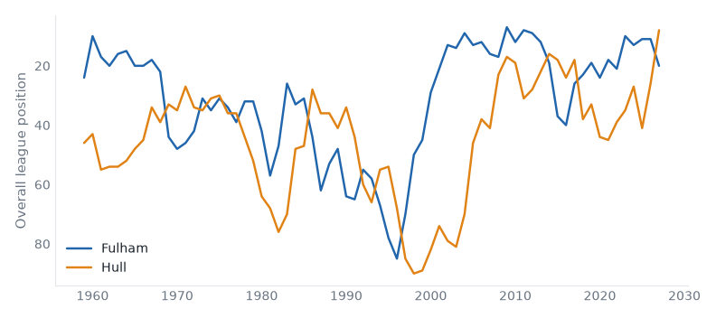
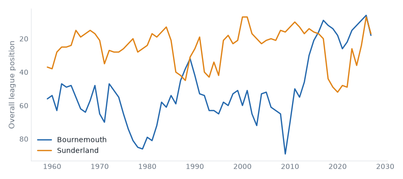
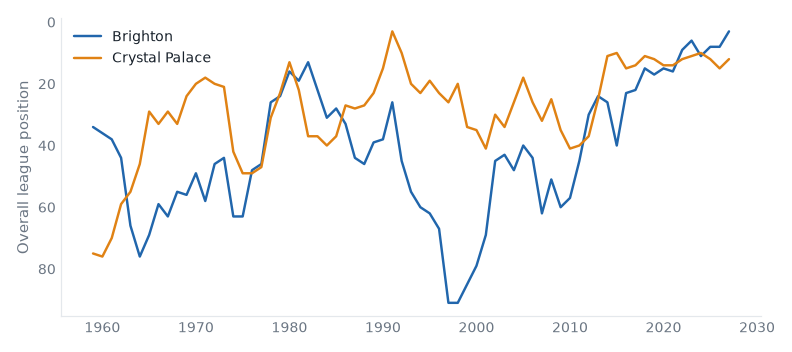
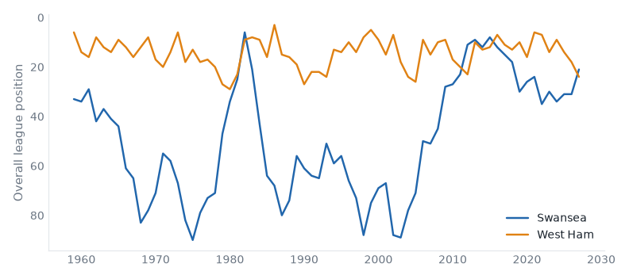
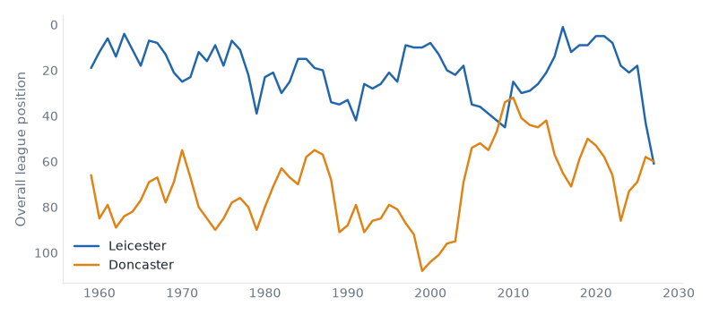
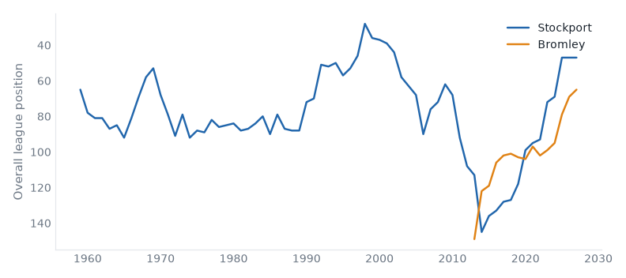

The Week Ahead
45 fixtures across 4 divisions, week of 16 October 2026.
Midweek
Premier League
Championship
| Tue | Birmingham | 4–0 | Preston |
| Tue | Bristol City | 0–1 | Blackburn |
| Tue | Burnley | 2–2 | Charlton |
| Tue | Cardiff | 5–1 | Watford |
| Tue | Millwall | 0–1 | Swansea |
| Tue | Stoke | 2–3 | Middlesbrough |
| Tue | Wolves | 1–3 | Bolton |
| Tue | Wrexham | 1–2 | West Brom |
| Wed | Lincoln | 0–6 | West Ham |
| Wed | Norwich | 0–1 | Southampton |
| Wed | Portsmouth | 3–2 | Sheffield United |
| Wed | QPR | 4–1 | Derby |
Premier League
Fulham host Hull in the Premier League on Saturday 17 October. Fulham live between the Premier League and the Championship; they are 5 seasons into a spell 1 division above that; they sit 20th with 2 points from 6 games, form LDDLL. Hull City live between the Championship and League One; this season is their highest since 2017; they sit 8th with 9 points from 6 games, form DLDDW. They have met 42 times in league play since 1968/69: Fulham 13 wins, Hull City 14, 15 drawn.

| Season | Division | Pos | Pts | |
|---|
| 2026/27 | Premier League | 20th | 2 | In progress |
| 2025/26 | Premier League | 11th | 52 | |
| 2024/25 | Premier League | 11th | 54 | |
| 2023/24 | Premier League | 13th | 47 | |
| 2022/23 | Premier League | 10th | 52 | |
|
| Season | Division | Pos | Pts | |
|---|
| 2026/27 | Premier League | 8th | 9 | In progress |
| 2025/26 | Championship | 6th | 73 | Play-off Promoted |
| 2024/25 | Championship | 21st | 49 | |
| 2023/24 | Championship | 7th | 70 | |
| 2022/23 | Championship | 15th | 58 | |
|
Bournemouth host Sunderland in the Premier League on Sunday 18 October. Bournemouth live between League One and League Two; they are 5 seasons into a spell 2 divisions above that; they sit 18th with 3 points from 6 games, form LLDDD. Sunderland live between the Premier League and the Championship; they are 1 division above that this season; they sit 17th with 4 points from 6 games, form LLLDW. They have met 10 times in league play since 1988/89: Bournemouth 2 wins, Sunderland 5, 3 drawn.

| Season | Division | Pos | Pts | |
|---|
| 2026/27 | Premier League | 18th | 3 | In progress |
| 2025/26 | Premier League | 6th | 57 | |
| 2024/25 | Premier League | 9th | 56 | |
| 2023/24 | Premier League | 12th | 48 | |
| 2022/23 | Premier League | 15th | 39 | |
|
| Season | Division | Pos | Pts | |
|---|
| 2026/27 | Premier League | 17th | 4 | In progress |
| 2025/26 | Premier League | 7th | 54 | |
| 2024/25 | Championship | 4th | 76 | Play-off Promoted |
| 2023/24 | Championship | 16th | 56 | |
| 2022/23 | Championship | 6th | 69 | |
|
Brighton host Crystal Palace in the Premier League on Sunday 18 October. Brighton & Hove Albion are, on the balance of their record, a Championship club; they are 10 seasons into a spell 1 division above that; they sit 3rd with 13 points from 6 games, form WWWDL. Crystal Palace live between the Premier League and the Championship; they are 14 seasons into a spell 1 division above that; they sit 12th with 7 points from 6 games, form WDLWL. They have met 52 times in league play since 1962/63: Brighton & Hove Albion 18 wins, Crystal Palace 17, 17 drawn.

| Season | Division | Pos | Pts | |
|---|
| 2026/27 | Premier League | 3rd | 13 | In progress |
| 2025/26 | Premier League | 8th | 53 | |
| 2024/25 | Premier League | 8th | 61 | |
| 2023/24 | Premier League | 11th | 48 | |
| 2022/23 | Premier League | 6th | 62 | |
|
| Season | Division | Pos | Pts | |
|---|
| 2026/27 | Premier League | 12th | 7 | In progress |
| 2025/26 | Premier League | 15th | 45 | |
| 2024/25 | Premier League | 12th | 53 | |
| 2023/24 | Premier League | 10th | 49 | |
| 2022/23 | Premier League | 11th | 45 | |
|
Brentford v Liverpool
Sat 17 Oct · 2 above level compare
Brentford 4th (DWDDD), Liverpool 9th (LWDWD). At least one of them sits above where their record says they belong.
Man City v Ipswich
Sat 17 Oct · above level compare
Manchester City 1st (WWWWW), Ipswich Town 10th (WLWLL). At least one of them sits above where their record says they belong.
| Sat 17 | Everton v Chelsea | neighbours | compare |
| Sat 17 | Newcastle v Aston Villa | | compare |
| Sun 18 | Leeds v Man United | yo-yo club | compare |
| Sun 18 | Nott'm Forest v Arsenal | yo-yo club | compare |
| Mon 19 | Tottenham v Coventry | yo-yo club | compare |
Championship
Swansea host West Ham in the Championship on Saturday 17 October. Swansea City are, on the balance of their record, a League One club; they are 9 seasons into a spell 1 division above that; they sit 1st with 23 points from 10 games, form WWWWL. West Ham United belong in the Premier League — 86% of their 69 recorded seasons; they are 1 division below that now; they sit 4th with 19 points from 10 games, form WDDWW. They have met 20 times in league play since 1979/80: Swansea City 4 wins, West Ham United 12, 4 drawn.

| Season | Division | Pos | Pts | |
|---|
| 2026/27 | Championship | 1st | 23 | In progress |
| 2025/26 | Championship | 11th | 64 | |
| 2024/25 | Championship | 11th | 61 | |
| 2023/24 | Championship | 14th | 57 | |
| 2022/23 | Championship | 10th | 66 | |
|
| Season | Division | Pos | Pts | |
|---|
| 2026/27 | Championship | 4th | 19 | In progress |
| 2025/26 | Premier League | 18th | 39 | Relegated |
| 2024/25 | Premier League | 14th | 43 | |
| 2023/24 | Premier League | 9th | 52 | |
| 2022/23 | Premier League | 14th | 40 | |
|
Millwall v Lincoln
Sat 17 Oct · 2 above level compare
Millwall 11th (LWDDL), Lincoln City 18th (LLLWW). At least one of them sits above where their record says they belong.
West Brom v Blackburn
Sat 17 Oct · below level compare
West Bromwich Albion 7th (WLLDW), Blackburn Rovers 9th (WWDWL). At least one of them sits below where their record says they belong.
Wrexham v Preston
Sat 17 Oct · 2 above level compare
Wrexham 17th (LDWLD), Preston North End 24th (LLDLL). At least one of them sits above where their record says they belong.
| Fri 16 | Burnley v Wolves | yo-yo club | compare |
| Sat 17 | Birmingham v QPR | neighbours | compare |
| Sat 17 | Bristol City v Sheffield United | neighbours | compare |
| Sat 17 | Derby v Stoke | yo-yo club | compare |
| Sat 17 | Middlesbrough v Cardiff | promoted last season | compare |
| Sat 17 | Norwich v Portsmouth | yo-yo club | compare |
| Sat 17 | Southampton v Bolton | below level | compare |
| Sat 17 | Watford v Charlton | | compare |
League One
Leicester host Doncaster in League One on Saturday 17 October. Leicester City live between the Premier League and the Championship; they are 2 divisions below that now; they sit 17th with 9 points from 8 games, form LDWLW. Doncaster Rovers live between League One and League Two; they are 1 division above that this season; they sit 16th with 9 points from 8 games, form WWLLD. They have met 8 times in league play since 2009/10: Leicester City 4 wins, Doncaster Rovers 2, 2 drawn.

| Season | Division | Pos | Pts | |
|---|
| 2026/27 | League One | 17th | 9 | In progress |
| 2025/26 | Championship | 23rd | 46 | Relegated |
| 2024/25 | Premier League | 18th | 25 | Relegated |
| 2023/24 | Championship | 1st | 97 | Champions |
| 2022/23 | Premier League | 18th | 34 | Relegated |
|
| Season | Division | Pos | Pts | |
|---|
| 2026/27 | League One | 16th | 9 | In progress |
| 2025/26 | League One | 14th | 60 | |
| 2024/25 | League Two | 1st | 84 | Champions |
| 2023/24 | League Two | 5th | 71 | |
| 2022/23 | League Two | 18th | 55 | |
|
Stockport host Bromley in League One on Saturday 17 October. Stockport County live between League One and League Two; they are 3 seasons into a spell 1 division above that; they sit 3rd with 16 points from 9 games, form WWDLW. Bromley belong in the National League — 60% of their 15 recorded seasons; this season is the highest in their record; they sit 21st with 8 points from 8 games, form LWDLL. They have met 6 times in league play since 2019/20: Stockport County 3 wins, Bromley 0, 3 drawn.

| Season | Division | Pos | Pts | |
|---|
| 2026/27 | League One | 3rd | 16 | In progress |
| 2025/26 | League One | 3rd | 77 | |
| 2024/25 | League One | 3rd | 87 | |
| 2023/24 | League Two | 1st | 92 | Champions |
| 2022/23 | League Two | 4th | 79 | |
|
| Season | Division | Pos | Pts | |
|---|
| 2026/27 | League One | 21st | 8 | In progress |
| 2025/26 | League Two | 1st | 87 | Champions |
| 2024/25 | League Two | 11th | 66 | |
| 2023/24 | National League | 3rd | 81 | Play-off Promoted |
| 2022/23 | National League | 7th | 71 | |
|
Barnsley v Cambridge
Sat 17 Oct · fallen giant compare
Barnsley 19th (LDLLW), Cambridge United 5th (WDDWD). Barnsley have played in the top flight.
Plymouth v Huddersfield
Sat 17 Oct · fallen giant compare
Plymouth Argyle 1st (WWLWW), Huddersfield Town 4th (DWLDD). Huddersfield Town have played in the top flight.
Sheffield Weds v AFC Wimbledon
Sat 17 Oct · fallen giant compare
Sheffield Wednesday 7th (DDDWW), AFC Wimbledon 11th (LDDWW). Sheffield Wednesday have played in the top flight.
| Sat 17 | Bradford v Stevenage | fallen giant | compare |
| Sat 17 | Leyton Orient v Blackpool | fallen giant | compare |
| Sat 17 | Milton Keynes Dons v Luton | fallen giant | compare |
| Sat 17 | Peterboro v Burton | above level | compare |
| Sat 17 | Wigan v Reading | fallen giant | compare |
| Sat 17 | Wycombe v Notts County | fallen giant | compare |
League Two
| Sat 17 | Accrington v Gillingham | below level | compare |
| Sat 17 | Colchester v Exeter | yo-yo club | compare |
| Sat 17 | Crewe v Rochdale | promoted last season | compare |
| Sat 17 | Fleetwood Town v Rotherham | below level | compare |
| Sat 17 | Grimsby v Northampton | fallen giant | compare |
| Sat 17 | Newport County v York | champions last season | compare |
| Sat 17 | Oldham v Cheltenham | fallen giant | compare |
| Sat 17 | Port Vale v Chesterfield | below level | compare |
| Sat 17 | Salford v Crawley Town | yo-yo club | compare |
| Sat 17 | Shrewsbury v Bristol Rvs | below level | compare |
| Sat 17 | Swindon v Walsall | fallen giant | compare |
| Sat 17 | Tranmere v Barnet | below level | compare |
Reviewed on
Monday review, tiers 1–2 and Tuesday review, tiers 3–5.
Built from the English football database, tiers 1–5 from 1958/59.
Results from football-data.co.uk.
Archived copy.